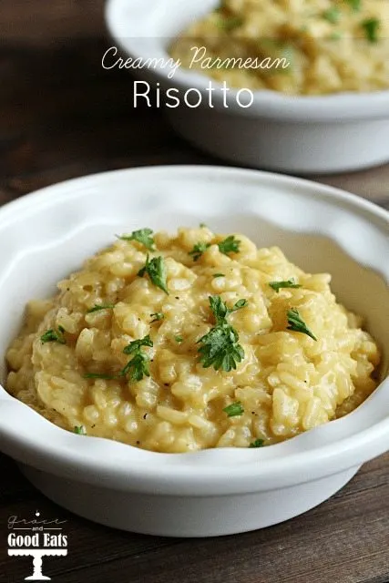

Parmesan Risotto Recipe

Parmesan Risotto Overview
Making a creamy Parmesan risotto is all about patience and the right technique. Start by sautéing onions in butter and olive oil until soft, then add Arborio rice and cook until it's lightly toasted. Gradually add warm stock, stirring constantly to allow the rice to absorb the liquid. As the risotto cooks, it becomes creamy and tender, absorbing the flavors from the stock.
Once the rice is cooked to a creamy consistency, stir in freshly grated Parmesan cheese and season with salt and pepper to taste. The result is a rich, velvety risotto that pairs perfectly with any main dish or can be enjoyed on its own.
Ingredients
- Arborio rice
- Chicken or vegetable stock (warmed)
- Butter
- Olive oil
- Onion (finely chopped)
- Garlic (minced)
- Parmesan cheese (freshly grated)
- Salt
- Pepper
- White wine (optional)
- Prepare the Stock: In a separate pot, heat your chicken or vegetable stock over low heat to keep it warm while you cook the risotto.
- Sauté Onions and Garlic: In a large pan, melt butter with olive oil over medium heat. Add chopped onion and garlic, cooking until soft and fragrant (about 5 minutes).
- Toast the Rice: Add the Arborio rice to the pan and stir for 1-2 minutes until the rice is lightly toasted and coated in butter.
- Add Stock Gradually: Begin adding the warm stock one ladle at a time, stirring constantly and allowing the rice to absorb the liquid before adding more. Continue this process until the rice is tender and creamy (about 18-20 minutes).
- Finish with Parmesan: Once the rice is cooked, stir in freshly grated Parmesan cheese, and season with salt and pepper to taste. Serve hot, and enjoy!